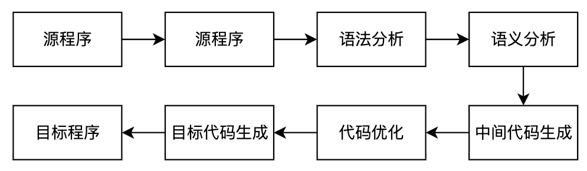

编译原理笔记
引论
- 编译的基本概念：把一种语言（源语言）书写的程序翻译成另一种语言（目标语言）的等价程序。
- 三种翻译程序的区别
- 编译的过程

- 和所有阶段都有关系：表格管理、出错处理
- 每个阶段的任务
- 每个阶段的输入、输出
- 遍
- 趟
- 前端
- 后端
文法和语言
文法的直观概念
- 语言的指导规则
符号和符号串
- 定义
- 字母表（符号集）：元素的非空有穷集合，字母表中的元素称为符号
- 符号串：字母表中的符号组成的任何有穷序列称为符号串
- 符号串的运算：
- 【不重要】符号串的头尾，固有头和固有尾
- 连接
- 方幂
- 符号串集合的运算
- 乘积：\(AB=\{xy|x\in A\wedge y\in B\}\)
- 闭包：\(\sum^*=\sum^0\cup\sum^1\cup\cdots\)
- 正闭包：\(\sum^+=\sum^1\cup\sum^2\cup\cdots\)
文法和语言的形式定义
- 文法：四元组 \((V_N, V_T, P, S)\)，其中 \(V_N\) 为非终结符集合，\(V_T\) 为终结符集合，\(P\) 为产生式集合，\(S\) 为开始符号。\(V_N \cap V_T = \phi\)，\(V_N \cup V_T = V\)，\(V\) 为所有符号集合。语言的指导规则。
- 规则（重写规则、产生式、生成式）：是形如 \(\alpha \rightarrow \beta\) 或 \(\alpha ::= \beta\) 的 \((\alpha, \beta)\) 有序对，其中 \(\alpha\) 为产生式左部，\(\beta\) 为产生式右部。\(\alpha \rightarrow \beta\) 或 \(\alpha ::= \beta\) 读作 定义为 。
- 直接推导：设 \(\alpha \to \beta\) 是文法 \(G=(V_N, V_T, P, S)\) 的规则，\(\gamma\) 和 \(\delta\) 是 \(V^*\) 中的任意符号，若有符号串 \(v, w\) 满足\(v = \gamma \alpha \delta,~w = \gamma \beta \delta\)，即说 \(v\) 直接产生 \(w\)，或说 \(v\) 是 \(w\) 的直接推导，或说 \(w\) 直接归约到 \(v\)，记作 \(v \Rightarrow w\)。
- 多步推导 \((\geq 1)\)：\(v \xRightarrow{+} w\)
- 多步推导 \((\geq 0)\)：\(v \xRightarrow{*} w\)
- 句型：设 \(G[S]\) 是一个文法，如果符号串 \(x\) 是从识别符号推导出来的，即有 \(S \Rightarrow x\)，则称 \(x\) 是文法 \(G[S]\) 的句型。
- 句子：若 \(x\) 仅由终结符号组成，即 \(S \Rightarrow x, x \in V_T^*\)，则称 \(x\) 为 \(G[S]\) 的句子。
- 语言：文法 \(G\) 所产生的语言定义为集合 \(\{x \mid S \xRightarrow{*} x, \text{其中 } S \text{ 为文法识别符号, 且 } x \in V_T^*\}\)。可用 \(L(G)\) 表示该集合。
- 等价文法：若 \(L(G1)=L(G2)\)，则称这两个文法是等价的。
文法的类型
-
0 型文法：设 \(G = (V_N, V_T, P, S)\)，如果它的每个产生式 \(\alpha \rightarrow \beta\) 是这样一种结构：\(\alpha \in (V_N \cup V_T)^*\) 且至少含有一个非终结符，而 \(\beta \in (V_N \cup V_T)^*\)，则 \(G\) 是一个 0 型文法。
- 直观理解：对于产生式限制最少的文法，基本意思就你是个产生式就行。所以，\(x(x\geq1)\) 型文法，也都是 0 型文法。
-
1 型文法：设 \(G = (V_N, V_T, P, S)\) 为一个文法，若 \(P\) 中的每一个产生式 \(\alpha \rightarrow \beta\) 均满足 \(|\beta| \geq |\alpha|\)，仅仅 \(S \rightarrow \varepsilon\) 除外，则文法 \(G\) 是 1 型或上下文有关的（context-sensitive）。
- 直观理解：每一步推导都会导致串非严格递增。
-
2 型文法：设 \(G = (V_N, V_T, P, S)\)，若 \(P\) 中的每一个产生式 \(\alpha \rightarrow \beta\) 满足：\(\alpha\) 是一个非终结符，\(\beta \in (V_N \cup V_T)^*\)，则此文法称为 2 型的或上下文无关的（context-free）。
- 直观理解：在 0 型文法上增加了限制条件，左边必须是非终结符。
- 3 型文法：设 \(G = (V_N, V_T, P, S)\)，若 \(P\) 中的每一个产生式的形式都是 \(A \rightarrow aB\) 或 \(A \rightarrow a\)，其中 \(A\) 和 \(B\) 都是非终结符，\(a \in V_T^*\)，则 \(G\) 是 3 型文法或正规文法。
- 直观理解：在 2 型文法上增加了限制条件，右边必须是终结符或终结符加非终结符的形式。由于这样的形式，正规文法是没有左递归的。
上下文无关文法（2 型）文法及其语法树
- 定义
- 最左推导：如果在推导的任何一步 \(\alpha \Rightarrow \beta\)（\(\alpha\)、\(\beta\) 是句型），都是对 \(\alpha\) 中的最左非终结符进行替换，则称这种推导为最左推导。
- 最右推导（规范推导）：如果在推导的任何一步 \(\alpha \Rightarrow \beta\)（\(\alpha\)、\(\beta\) 是句型），都是对 \(\alpha\) 中的最右非终结符进行替换，则称这种推导为最右推导。
- 右句型（规范句型）：由规范推导所得的句型。
句型的分析
词法分析
自顶向下的语法分析方法
自低向上优先分析
LR 分析
LR 分析概述
实际上，LR 分析器就是一个状态转换图，分析表就是一个状态转换表。这与 DFA 是一致的。
-
LR 分析器有 3 部分：
- 总控程序（驱动程序），所有的 LR 分析器的总控程序都是相同的
- 分析表（分析函数）
- 分析栈
-
状态进行转换时，总共有四种转换类型：
- 移进（Shift）
- 规约（Reduce）
- 接受（Accept）
- 报错（Fail）
LR(0) 分析
前面说，LR 分析本质上就是状态转换，因此，无论名字怎么变，也就是在状态转换上玩出花，不会有什么大的差异。
可归前缀、活前缀
- 可归前缀：感觉就是规范句型中，可以进行规约的前缀
- 活前缀：若 \(S' \xRightarrow[R]{} \alpha A \omega \xRightarrow[R]{} \alpha \beta \omega\) 是文法 \(G\) 的扩广文法 \(G'\) 中的一个规范推导，符号串 \(\gamma\) 是 \(\alpha\beta\) 的前缀，则称 \(\gamma\) 是 \(G\) 的一个活前缀。
活前缀｜直观理解
把在规范句型中形成可归前缀之前，包括可归前缀在内的、所有前缀都称为活前缀。
LR(0) 项目集规范族的构造
- 状态转换图中，每个状态包含若干个项目。项目类型：
- 移进项目。点后面是终结符的
- 待约项目。点后面是非终结符
- 归约项目。点后面啥也没有
- 接受项目（规约项目的特殊情况）。既然是规约项目的特殊情况，它首先肯定是点后面啥也没有，其次则是要满足左部的非终结符为拓广产生式 \(S'\)
- 这种问题都要构造 DFA 和 LR 分析表。
- DFA 构造步骤：
- 对开始符拓广。
- 构建开始状态。构建步骤：
- 写下状态可以得到的产生式，注意点的位置
- 如果点后有非终结符，则写下对应非终结符的产生式
- 重复 2，直至项目集不再扩大
- 从开始状态，逐个输入可能输入的符号，每输入一个符号。使用上述构建步骤构建一次状态，直到项目集不再扩大。
- LR 分析表构造步骤：
- 横轴是所有符号，终结符放一起（ACTION），非终结符放一起（GOTO）
- 纵轴是所有 DFA 中所有状态的编号。对于状态 S 和符号 G，（S,G）代表状态 S 输入符号 G 后的状态，自然对应之前说的移进、规约、接受、报错四种。
- 移进：\(S_{移进的状态编号}\)
- 规约：规约进入的状态编号
- 接受：acc
- 报错：空白
语法制导的语义计算
静态语义分析和中间代码生成
运行时存储组织
代码优化和目标代码生成
🔥 老师上课给出的一些问题
据老师说，能让你从 80 到 90。
第一章
- 用 BNF/EBNF 或语法图描述高级语言
- 程序设计语言的定义涉及：语法、语义、语用
- 程序设计语言的形式语言涉及：语法、语义
- 在使用高级语言编程时，首先可通过编译程序发现源程序的全部语法错误和部分语义错误
- 编程语言的语言处理程序是一种系统软件
- 【存疑】什么是两类程序语言处理程序：编译程序、解释程序
- 【存疑】三种翻译程序：汇编程序、编译程序、解释程序
- 下面关于解释程序的描述正确的是 (1)。
- (1) 解释程序的特点是处理程序时不产生目标代码
- (2) 解释程序适用于 COBOL 和 FORTRAN 语言
- (3) 解释程序是为打开编译程序技术的僵局而开发的
- 由于受到具体机器主存容量的限制，编译程序几个不同阶段的工作往往被组合成D。
- A、过程
- B、程序
- C、批量
- D、遍
- 编译的6个阶段 这些工作往往是穿插进行的
- 编译程序生成的目标程序，不一定是机器语言的程序。不一定是可执行程序
- 目标代码在形式上分为：绝对指令代码、可重定位的指令代码、汇编指令代码
第二章
- BNF范式是一种广泛采用的描述语言和语法规则的范式
- 一个语言的文法是不唯一的
- 生成非0开头的正偶数的文法
- 若一个文法是递归的，则它产生的句子的个数是无穷的
- 一个句型的最左简单短语或直接短语称为句柄
- 对任意一个左限性文法，都存在一个右限性文法使得二者等价
- 正规文法不一定是二义性文法(二者无关)
- ❌ 文法的规则的左部就是非终结符(比如0和1型)
第三章
- 确定的有穷自动机是五元组
- 不存在这样一些语言，他们能被确定的有穷自动机识别，但不能被正规式表示
第四章
- 不确定的自顶向下的语法分析会遇到的问题：回溯
- LL（1）的两个 L 分别代表什么含义？\(\rightarrow\) 老师说不会出这种题。但多记一个又怎么了！
- 第一个L表明自顶向下分析时从左向右扫描输入串
- 第二个L表明分析过程将最左推导
- 编译程序的语法分析程序接受单词的输入
- 递归下降子程序的语法分析属于自顶向下
- 表驱动的可以用递归下降
- LL(K)文法都是非二义性的文法
第五章
- 算符优先分析每次都是对最左素短语进行规约
- LR 语法分析栈中，存在的状态，是识别可归前缀(活前缀)的DFA
- 若一个句型中，出现了某一个产生式的右部，该右部不一定是句柄
- ✅ 一个文法是LR1文法，那么它一定是SLR1文法
- LR、SLR、LALR 的范围比较：
- 最小 LR0
- 中间 解决冲突用SLR1，不能都解决
- 最大 的LR1
- LALR1 比 LR1 小，但大小等于 SLR1
- 如果一个文法是 LR1，不一定是 LALR1，反之则一定是
- ❌ 符号表由词法分析程序建立，由语法分析程序使用
- 下列关于标识符和名字叙述中，正确的是C。
- A、标识符有一定的含义
- B、名字是一个没有意义的字符串序列
- C、名字有确切的属性
- D、A~C都不正确
- 过程和过程引用信息交换的方法是参数传递和全局变量使用
- 允许动态申请和释放空间，采用的存储分配的技术是堆
- Pascal中过程说明的局部变量地址分配在B。
- A. 调用者的数据区中
- C. 被调用者的数据区中
- C. 主程序的数据区中
- D. 公共数据区中
🔥 题目分布
第二章
- 【大题】给文法，问语言。或反之
- 【大题】语法树进行语法分析，找最左素短语
第三章
- 【大题】NFA 的确定化、最小化
第四章
- 【大题】给文法、是否 LL(1)
- 【大题】表驱动方法分析句子